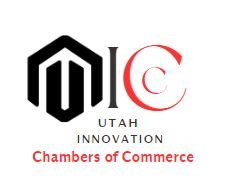

Purpose
To create a dynamic and supportive business community that fosters innovation in products and services, supports business growth, and prosperity in Utah through collaboration with key stakeholders.
Target Audience
The target audience are key stakeholders in the Utah business community, and they have unique needs and interests when it comes to innovation and economic growth and include the entrepreneurs and investors
Personas
The Entrepreneurs: who are individuals looking to start or grow a business in Utah with varying levels of experience with entrepreneurship and running a business. They are typically young professionals or aspiring entrepreneurs who may range in age from 20 to 50, with a median age of around 30 to 35 years old and a net annual income that may vary, but most are likely in the range of $30,000 to $100,000 per year and have a college degree or higher. who are looking for resources, support, and networking opportunities to help them succeed. These include aspiring Entrepreneurs, Small business owners, Startups and early-stage companies, Freelancers and independent contractors, and Business coaches and consultants.
The Investor: who are individuals looking to invest in innovative and high-growth businesses in Utah. They are typically high net worth individuals, venture capitalists, or angel investors with an income earning of over $100,000 per year who are looking for investment opportunities and strategic partnerships with investing and the business world, with many having years of experience in venture capital, private equity, or investment banking. These include Venture capitalists, Angel investors, Private equity firms, Institutional investors, and corporate development teams.
Scenarios
- Will jenny a recent college graduate who dreams of starting her own tech business upon visit to site, immediately see a homepage that features a slider and images and information about upcoming events and news?
- Will jenny find in a section called “startup spotlight”, highlight of successful tech start-ups in Utah area?
- Can Jenny see upcoming networking event and fills out the registration form on the website?
- Will Dr. McChesney a CEO of the fastest growing agro-engineering company, be able to sign up, upon visit to the Utah Innovation Chamber of Commerce to support a mentorship program for young entrepreneurs?
- Can Amarachi, a talented young CEO of an upcoming photo-studio upon visit to the website, be able to navigate to view company list to identify potential collaborators?
Branding
Website Logo
Style Guide
Color Palette
Palette URL:
https://coolors.co/f3f9d2-a7ab18-26303a| Primary | Secondary | Accent 1 | Accent 2 |
|---|---|---|---|
| #f3f9d2 | #a7ab18 | #26303a | #ff3131 |
Typography
Heading Font: Roboto
Paragraph Font: Montserrat
Normal paragraph example
The website can promote Utah as a hub for innovation and entrepreneurship, and showcase the state's business-friendly environment, skilled workforce, and high quality of life. This can help attract investment and talent to the state.
Colored paragraph example
By addressing the needs of the entrepreneurs and Investors, the Utah Innovation Chambers of Commerce website can create a more vibrant and dynamic business ecosystem in the state. Both audiences are likely to access the site from a variety of devices, including desktop and laptop computers, smartphones, and tablets.